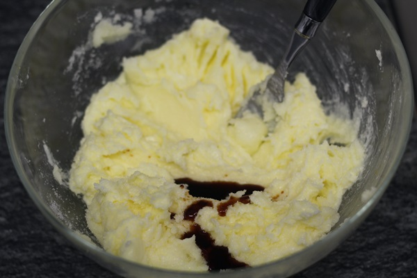
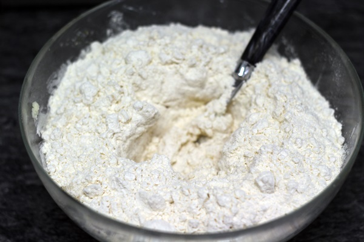
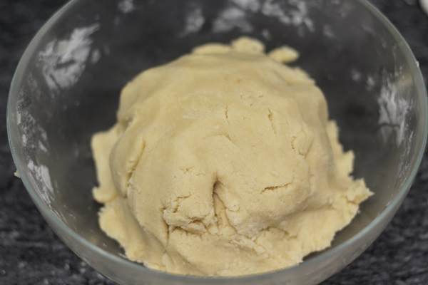
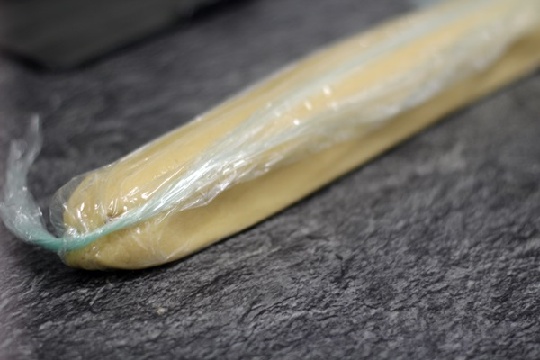
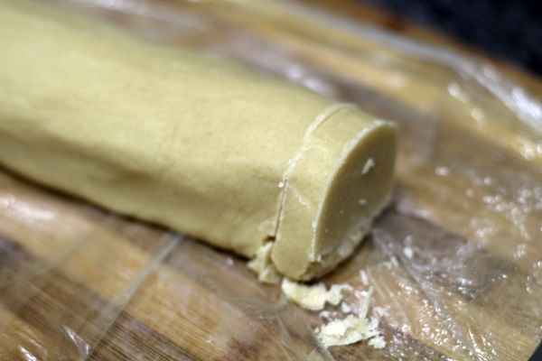
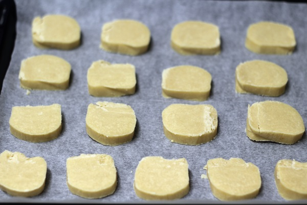

1.- En un bol comenzamos mezclando la mantequilla con el azúcar. Recordad que la mantequilla debe de estar a temperatura ambiente para poder trabajar bien con ella. Mezclamos muy bien.

2.- Una vez mezclado, agregamos la cucharadita de esencia de vainilla.
3.- Continuamos con la harina tamizada. Pasamos la harina por un colador antes de incorporarla al bol. Mezclamos muy bien.
4.- Ahora es momento de darles forma. Lo más fácil es hacer un rollito como veis a continuación con la ayuda de papel film y meterlo en la nevera durante 1 hora más o menos. A partir de ahí, lo que haremos sera «cortar rodajas» de 1 cm más o menos y hornearlas.
  5.- Las ponemos en un bandeja de horno cortadas y las horneamos a 180º durante unos 11-12 minutos. En el momento que veamos que se empiezan a dorar los bordes las sacamos. Si veis que están blanditas no las dejéis más porque yo cometí una vez ese error, cuando se enfrían se endurecen. Así que no os preocupéis si tocáis alguna y la veis blanda.
